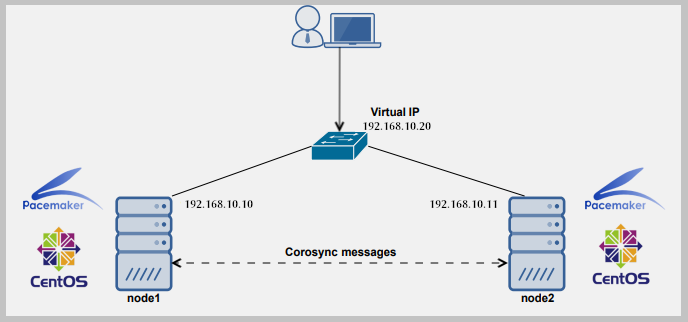

Setting up a Failover IP Cluster, or High-Availability Cluster, means that two servers will share a public IP address while maintaining their own resources. This means that if one server fails or loses connection the other server will take over the IP address and function the same as the previous server. This is helpful in maintaing availabilty of resources and web sites.
To do this you must first synchronize the times of both servers so they are running concurrently. After that you set up a cluster with the nodes under the same 'binding IP address' with Corosync and Pacemaker in the Ubuntu services. These are cluster management tools that establish a connection between the two servers and monitor both of them for 'life.'
After setting up the cluster under the same IP address you must establish STONITH, or Shoot The Other Node In The Head. This means that if the primary node fails and the secondary node has to take over it will ensure the previous server is 'dead' by physically shutting it down. This allows the new 'primary' server to take over without getting interfered with by the other server.
Once the cluster and STONITH are established and setup you are free to test the HA (High Availability) system. To do this you would shut down the primary node with a 'crm node standby primary' command. This puts 'Server A' on standby allowing 'Server B' to kill it and take over. Once that is completed you run a 'crm node online secondary' command and it will come back as the secondary server.